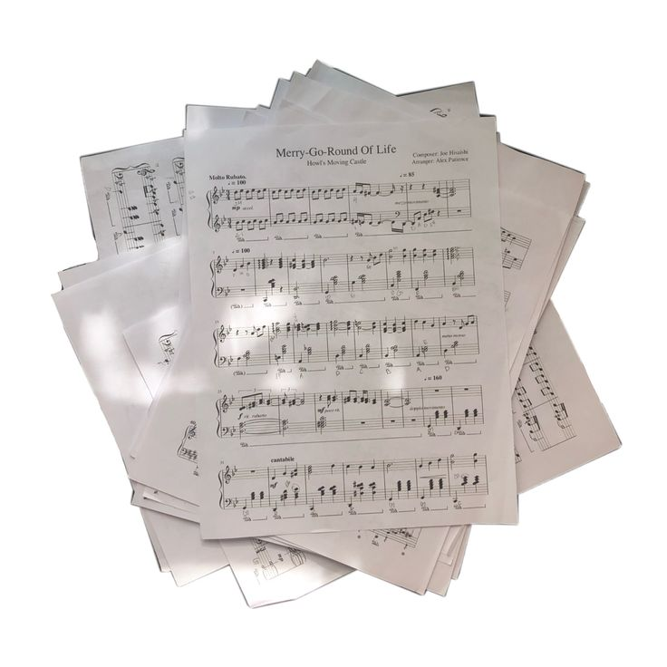

Curiosidades sobre o violino


- 1. O violino tem mais de 70 peças de madeira unidas com precisão, mesmo sendo um instrumento pequeno.
- 2. A madeira usada influencia muito o som: geralmente abeto no tampo e bordo no fundo e laterais.
- 3. Alguns violinos feitos há mais de 300 anos, como os de Stradivari, ainda são usados por músicos até hoje.
- 4.O violino é considerado o instrumento mais próximo da voz humana, pela semelhança na forma como pode expressar emoções.
- 5.O arco do violino tradicionalmente é feito com crina de cavalo, tratada para ter atrito com as cordas.
- 6. É usado tanto na música clássica quanto em estilos populares, como o forró pé de serra no Brasil e o country nos EUA.
- 7.O menor violino já construído tinha apenas 3 centímetros de comprimento — mas não dava para tocar de verdade.